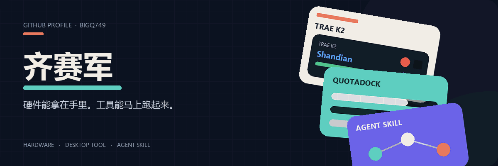
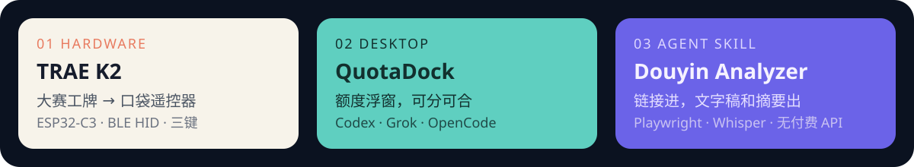

简体中文 · English

Hi there 👋
我是 齐赛军。GitHub：BigQ749
我把能摸到的硬件、能挂在桌面上的工具、能交给 Agent 的 Skill，做到能用、能开源。
📫 How to reach me:
- GitHub：BigQ749

My Products:
- TRAE K2 — 把 FoloToy 大赛工牌烧成闪电说 / PPT 蓝牙遥控器。
- QuotaDock — Windows / macOS 额度浮窗。
- Douyin Video Analyzer — 抖音链接进，文字稿和摘要出。
- 穹顶 — 本地优先的企业 Agent 工作台。
- Typhoon Relief — 微信小程序：附近 SOS + 防灾科普。
- Codex Growth Skills — 学习记忆与成长教练 Skill。